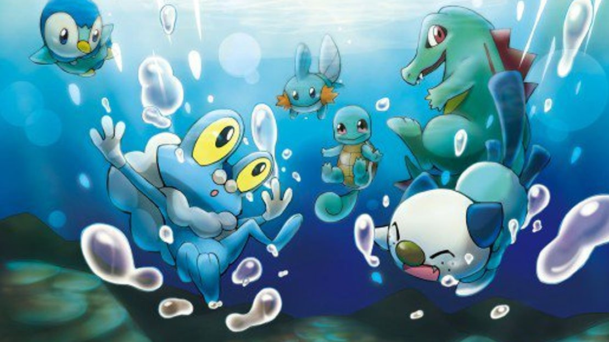

Tipo Agua
Los Pokémon de tipo agua se sienten a menudo libres en cualquier sitio donde haya agua a su disposición y la mayoría de estos Pokémon pertenecen también a otros tipos. Por esto se dice que los Pokémon de agua son muy adaptables y su dinamismo los hace destacarse en concursos, presentaciones y evasión de ataques. Como muchos viven en el agua, están provistos de aletas u otros mecanismos para desplazarse en ella.
ES DEBIL CONTRA: